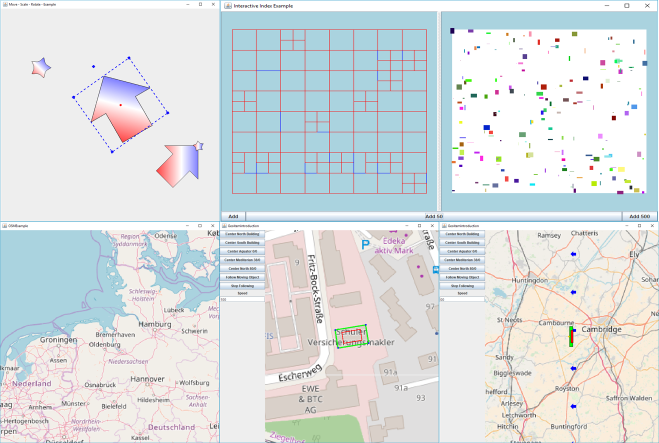
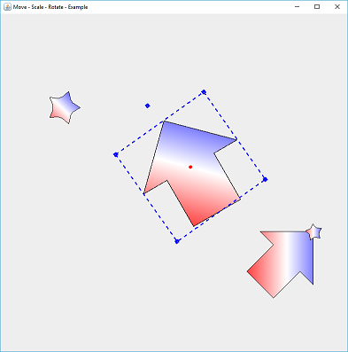

GraphicsView
The GraphicsView project reproduces QT's well-known "Graphics View Framework" for Java.

The focus is on decoupling from the graphics scene, in which all objects are defined, and the GraphicsView, which offers a specific view of a scene.
Why using GraphicsView
Features of GraphicsViewCore
- Easy to use : Adding an Item requires only three lines of code
- Familiar Coordinate System : make use of the more familiar coordinate system (positive x to the right, positive y to up)
- Multiple View Support : You can use different views on the same scene
- Easy interaction with graphical items
- Fast Index Structures : Different Storage strategies can be used to organize the items within a scene and to speedup the selection of items
- Reuse of Shapes : An shape (java2D) can be used in multiple items
- Designs : Use designs to change the visual behaviour of items, even if they do share the same shape
- Item Hierarchies : Items can be organized into Item - Hierarchies, similar to an 3D Scenegraph
- Independent Mouse Support for each Item: Each Graphical Item can make use of its own Mouse Handlers
- MouseListener
- MouseMotionListener
- MouseWheelListener
- Unlimited Zooming: No limitiations for zoom levels
- Easy observation of Changes: each item can be observed, wheater one of its parameters has been changed
- Custom Drawables : The optical representation of an item can easily been changed
- Z-Order: Define which item shall overpaint all others
Features added by GeoGraphicsView
-
Tile Support : The GeoGraphicsView supports different TileFactories, that could even be mixed
-
Scale Aware Geographic Shapes : automatic correction of scaling effects, based upon the Projection from WGS84 coordinates to Web Mercator
-
Memory Aware Caching : Tile Images can be efficiently (Memory and Performance) organized into hierarchical caches. Each cache takes care of its own memory consumption.
-
No dependencies : plain java and java2D is used
Examples
Quickstart
if (isAwesome){
return true
}
Source Code Examples
- SelectionExample.java : Demonstrates how to add Items and how to use the SelectionHandler to select them
- RotationExample.java : Demonstrate how Items could be rotated, as well as the effect to their bounding box
- LotsOfItemsExample.java:
- Demonstrate the performance of the GraphicsView with a lot of independend items (40000 items)

- MoveScaleRotateItemExample.java :
- Demonstrate how to interact with an item and how this interaction can be customized
- 
- OSMExample.java :
- Demonstrates how to add OSM background

- InteractiveIndexExample:
- Demonstrate the used Quadtree Storage strategy

- MovingItemsWithOSMBackground:
- Performance Demonstration for 40000 items that do move through the scene

- GeoItemsIntroduction.java: *demonstrates the scale effect when using WebMercator projections and how to solve the issue with GeoGraphicsView
Similar Projects and what is different
The following projects have some kind of similar objectives but none of them could fullfill all requirements. However all of them have been used as inspiration.